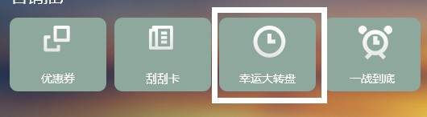
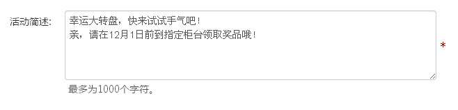
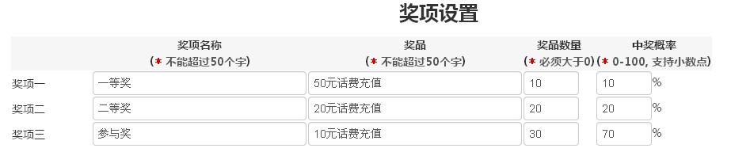
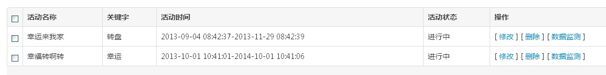
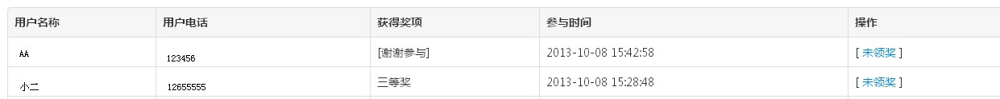

一、点击幸运大转盘，进入幸运大转盘配置页面后，点击“新增”，即可新建大转盘活动。如图：
二、进入新建活动的页面，然后输入活动名称、活动时间、活动演示图片等。图片建议700*380像素。如图：
注意：*活动关键词不能与其它活动重复
三、填写活动简述等。
活动简述要让粉丝明白优惠券的使用有效期，如何兑奖等信息，避免产生纠纷。如图：
四、设置奖项一二三的奖品及数量。如图：
五、其他项目设置，如每人每天可参与次数、参与总次数等：
六、设置完毕后，还可以一览所有创建的活动，修改或删除已设置的活动。
七、接下来，通过操作中的“数据监测”可以获取参与活动的用户的信息和奖项的信息。
心动不如行动，快去新建您自己的幸运转盘活动吧！：）